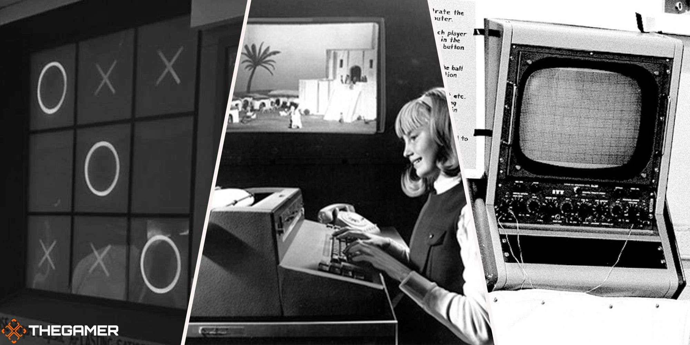

The history of video games spans over several decades and has gone through remarkable transformations
in technology, storytelling, and interactivity.
The Early Beginnings (1940s - 1950s)
1947: Cathode-Ray Tube Amusement Device—often considered the first electronic game—was
created by Thomas T. Goldsmith Jr. and Estle Ray Mann. It was a simple missile simulator.
1952: OXO (a variation of Tic-Tac-Toe) was developed by A.S. Douglas on the EDSAC computer.
It was the first known video game to be played on a graphical screen.
Impact: Early video games were seen as experimental projects in universities and research labs.
These games were not available to the general public but laid the foundation for future developments
